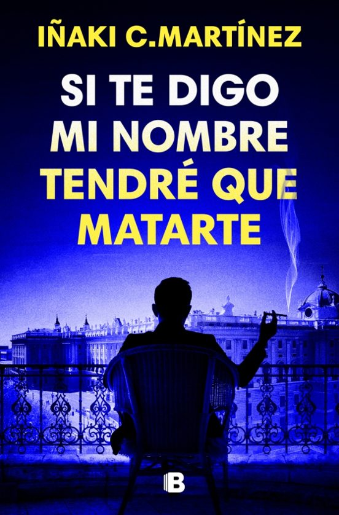

Lecturas Recomendadas

Tras casi dieciocho meses en el Colegio de Guerra Basgiath, Violet Sorrengail tiene claro que no queda tiempo para entrenar. Hay que tomar decisiones. La batalla ha comenzado y, con enemigos acercándose a las murallas e infiltrados en sus propias filas, es imposible saber en quién confiar. Ahora Violet deberá emprender un viaje fuera de los límites de Aretia, en busca de aliados de tierras desconocidas que acepten pelear por Navarre. La misión pondrá a prueba su suerte, y la obligará a usar todo su ingenio y fortaleza para salvar lo que más ama: sus dragones, su familia, su hogar y a él. Aunque eso signifique tener que guardar un secreto tan peligroso que podría destruirlo todo. Navarre necesita un ejército. Necesita poder. Necesita magia. Y necesitará algo que solo Violet puede encontrar: la verdad. Pero una tormenta se aproxima… y no todos sobrevivirán a su furia.
ME GUSTA MUCHO MATAR. Es casi lo que más me gusta, además de ser famoso. Pero no lo hago solo por placer: mis exclusivas sobre crímenes me han convertido en el colaborador estrella del programa más visto de la televisión. A la policía no le hace demasiada gracia que yo sepa más que ellos sobre los casos que no resuelven, pero así son las cosas. Toda España me conoce. Mi vida feliz cambió una noche de copas en el bar donde se cierran los negocios más turbios de Madrid. Sí, el bar es ese en el que estás pensando, el mismo. Fue allí donde mi mejor amigo (o único amigo, si te soy del todo sincero), un periodista deportivo que ha logrado relacionarse de maravilla con las altas esferas, me hizo un encargo que no pude rechazar…, al menos si quiero seguir con vida. La satisfacción cuando terminas una película de las buenas. El sabor de un vino que te sorprende. Tu primera raya. El placer de un orgasmo. O de un gol importante si eres más de fútbol que de follar. Mezclalo todo.